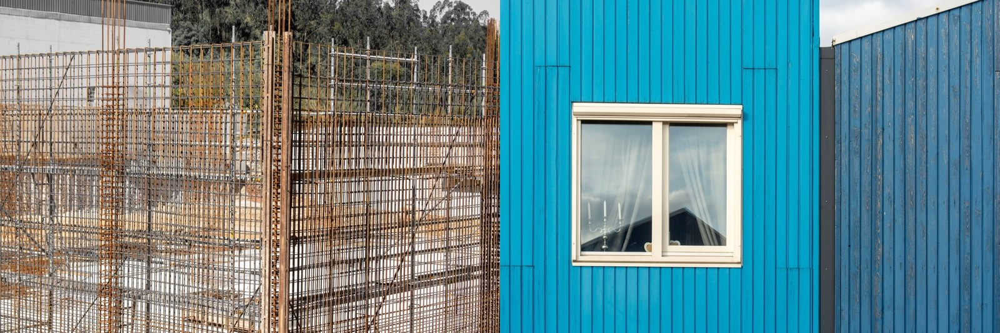

ICF vs SIP
Two high-performance wall systems: insulated concrete against insulated wood panels. Both are fast and efficient. In a humid, termite-heavy tropics, one is far safer than the other.

ICF, insulated concrete forms, and SIPs, structural insulated panels, are the two darlings of high-performance building. Both give you a fast, airtight, super-insulated shell. The difference is what's inside the wall. ICF is reinforced concrete wrapped in foam. A SIP is a foam core between two wood (OSB) skins. In a hot, humid, termite-rich climate, that difference decides everything.
The verdict
For the tropics, ICF wins for most permanent homes. It delivers comparable insulation and comfort with a concrete core that ignores moisture, termites, fire, and hurricanes. SIPs are superb in dry or temperate climates and for speed, but their wood skins are exactly what tropical humidity and termites attack.How they stack up
| Factor | ICF (concrete) | SIP (wood panels) |
|---|---|---|
| Core material | Reinforced concrete | Foam between OSB (wood) |
| Cost | 🟡 ~$120–190/sq ft | 🟡 ~$120–200/sq ft |
| Insulation | 🟢 Continuous foam + mass | 🟢 Continuous foam core |
| Build speed | 🟢 Forms stack fast | 🟢 Panels crane in fast |
| Moisture / humidity | 🟢 Concrete unaffected | 🔴 OSB skin vulnerable if breached |
| Termites | 🟢 Immune | 🔴 Wood skin is a target |
| Hurricane / seismic | 🟢 Monolithic concrete, excellent | 🟢 Strong panels, good connections |
| Fire | 🟢 Concrete core | 🟡 Foam + wood needs detailing |
| Tropical fit | 🟢 Excellent | 🟡 Careful; moisture and termite risk |
What sets them apart
Both wrap a structure in continuous insulation, so their energy performance is comparable. The split is the structural material. ICF's concrete core gives it thermal mass and total immunity to the tropics' big three: water, termites, and fire. A SIP's strength lives in its OSB skins, which are wood. Breach one, or let humidity or termites reach it, and you have a hidden structural problem.
Which to pick
- Go ICF for a permanent tropical home: storm and seismic strength, cool interiors, and no moisture or termite worry.
- Go SIP in dry or temperate climates, or where speed and a lightweight shell matter most and moisture is well controlled.
- Either way you get a tight, well-insulated home; the tropics just tilt the safety math hard toward ICF.
In Panama and Costa Rica
This is one of the clearest calls in the whole building guide. In Panama or Costa Rica, ICF gives you SIP-level comfort without SIP's tropical liabilities, and it's a natural upgrade from the region's concrete-block default. SIPs can be made to work with meticulous detailing and treated skins, but for most builds the humidity and termite math favors concrete.
Building in Panama or Costa Rica?
SORA builds fixed-price homes for foreign buyers in Panama and Costa Rica. We match the method and material to your site, budget, and how long you plan to keep the house, and tell you straight when the cheaper option is the smarter one.
See 2026 build costs →Frequently asked questions
Is ICF or SIP better for a humid tropical climate?
ICF, for most homes. Its concrete core is immune to the moisture, termites, and fire that threaten a SIP's wood (OSB) skins, while delivering comparable insulation and comfort. SIPs can work with careful detailing, but ICF removes the biggest risks.
Do ICF and SIP cost about the same?
Roughly, yes. Both are premium high-performance systems in a similar range, around $120 to $200 a square foot, above conventional block or stick framing. The choice usually comes down to climate and structural priorities rather than price.
Which is stronger in a hurricane, ICF or SIP?
Both perform well when properly built, but ICF's monolithic reinforced-concrete wall is among the strongest residential wall systems available, giving it the edge in extreme wind and seismic events.
Sources & verification
Figures in this guide were checked against primary and authoritative sources on 27 July 2026. Immigration, tax, and cost figures change — always confirm the current rules with the official body or a licensed professional before acting.